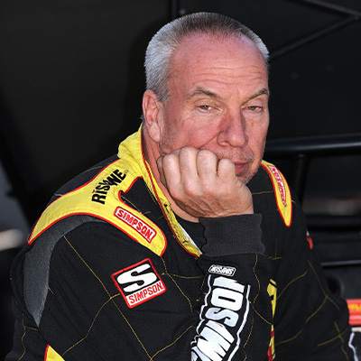

Terry Gray to Make Final Starts at USCS Flip Flop 50 at Riverside
The 16-time United Sprint Car Series national champion and 2022 National Sprint Car Hall of Fame inductee says the series finale this weekend at Riverside International Speedway will be his last competition.

Terry Gray of Bartlett, Tenn., a 16-time United Sprint Car Series national champion and 2022 National Sprint Car Hall of Fame inductee, will compete Friday and Saturday at Riverside International Speedway in West Memphis, Ark., in what he says is his final competition after a 52-year sprint car career, according to a post Friday from the track. Gray is entered in the USCS season finale, the ACE DORAN Rigging & Hauling 18th Annual Bobby Martin Memorial USCS Flip Flop 50 presented by XC Gear, on Nov. 20 and 21.
Gray leads the 2026 Hoosier Racing Tire USCS Outlaw Thunder Tour presented by XC Gear national standings with 3,080 points, 22 ahead of Jeff Willingham of Ripley, Miss., according to the series standings. He also leads the USCS MidSouth Thunder Tour. Preliminary events are scheduled Friday night, with twin 25-lap A-Mains on Saturday. The event has more than $10,000 on the line with bonuses, according to the track and a series preview by USCS founder and president Pete Walton. Gray earned his 99th career USCS feature win on Sept. 5 at Dixie Speedway in Woodstock, Ga., according to a USCS report, and the Riverside post said he comes into the weekend with 99 series wins.
Besides his 16 national titles, the track said Gray has more than 50 USCS national and regional series titles on pavement and dirt. USCS reports have repeatedly identified him as a 16-time national champion. The National Sprint Car Hall of Fame inducted Gray in its class of 2022, noting a 1980 World of Outlaws win at Riverside, four consecutive American Sprint Car Series national championships from 1995 through 1998, and a USCS career that began in 2001.
USCS founder and president Pete Walton said, according to the Riverside post, “Terry Gray has made not only a huge contribution to the United Sprint Car Series, but to the sport of sprint racing in general. He has been an iconic figure, especially in the winged-360 portion of the sport where his success on both dirt and paved ovals as well is unmatched. There are really not many Terry Grays left in this sport. He has made such a contribution to our series and to others as a driver, car owner, mentor, advisor and friend to many. We wish him all the very best in his next move, while not still behind the wheel of a race car. He will be missed as a competitor.”